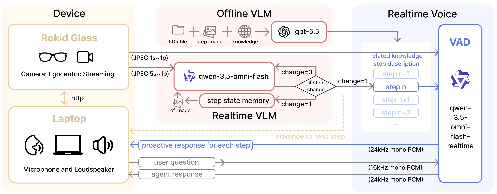

Research prototype
BrickBuddy
A Step-Situated Wearable Agent for Knowledge Exploration During Brick Assembly
Project page draft. Publication details, author links, and citation will be updated when they are ready to share publicly.

Step-situated support from the learner's view
Existing brick assembly learning systems often rely on fixed or external views. Smart glasses create an opportunity for agents to support assembly from the user's egocentric view. However, general multimodal agents often lack procedural context, such as the user's current step and next assembly goal.
BrickBuddy is a step-situated agent for knowledge exploration during brick assembly. Before assembly, an offline LLM generates step descriptions and knowledge snippets. During assembly, an edge monitor based on a VLM tracks step changes from the smart glasses view. A voice agent uses this step context to provide relevant knowledge, answer user questions, and remain silent during manual work.

Hall of Prayer for Good Harvests brick assembly
The current demo uses a brick model of the Hall of Prayer for Good Harvests. The task has clear assembly steps and visible cultural features, making it suitable for testing step-aware narration, question answering, and silence during manual work.
Pilot sessions suggest that the prototype can preserve user flow while supporting spontaneous knowledge exploration. These observations are preliminary and are used to inform future design of proactive wearable agents for procedural activities.
Source code
Source code, setup notes, and selected prompt files are available in the public repository.